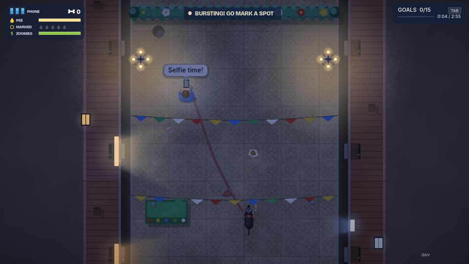
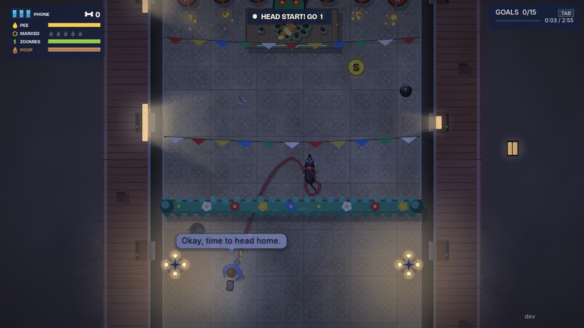
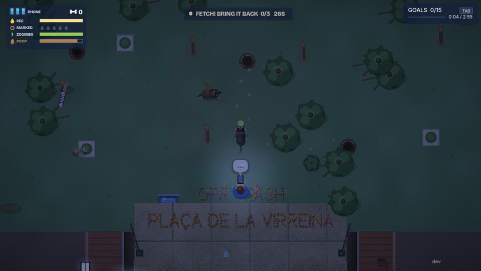

A festival of decorated streets
Vila de Gràcia during its August Festa Major, every narrow street dressed wall-to-wall in themed paper arches, string lights and late-night churro counters. Reach Plaça de la Virreina and the masked correfoc devils light their pitchforks to run you straight back through the banners.


